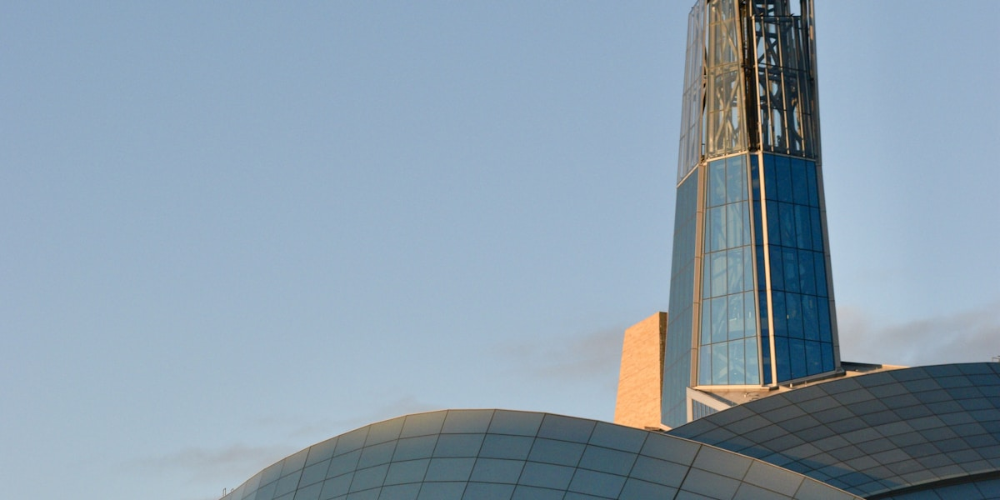

Canadian Museum for Human Rights Winnipeg: Hours, Tickets and Galleries

The Canadian Museum for Human Rights is at 85 Israel Asper Way, at The Forks in downtown Winnipeg, where the Red and Assiniboine rivers meet. It is open Tuesday to Sunday from 10 a.m. to 5 p.m. and closed on Mondays. An adult ticket is $23, and admission is free on the first Sunday of every month. Give it three hours if you want to see most of the ten galleries without rushing.
Hours and holiday closures
Regular hours are 10 a.m. to 5 p.m., Tuesday through Sunday. Over the holidays the museum closes early on Christmas Eve (open 10 a.m. to 1 p.m. on December 24, 2026) and is closed on December 25 and 26 and on January 1, 2027. It also shuts for a full maintenance week every January, this time from January 11 to 18, 2027. Plan around it if you are coming in mid-January for the river trail.
Ticket prices and free days
- Adults (18 to 64): $23
- Seniors (65 and over) and post-secondary students, with ID: $18
- Youth (7 to 17): $11
- Children 6 and under, Indigenous Peoples and museum members: free
A general admission ticket is good for unlimited re-entry the same day, so you can walk over to The Forks Market for lunch and come back for the upper floors. Buy at the desk inside the main entrance or online through the museum's ticketing site.
Admission is free on the first Sunday of every month, on Canada Day, on September 30 (National Day for Truth and Reconciliation) and on December 10, Human Rights Day. The next free days this season are Sunday, December 6, and Thursday, December 10, 2026.
The ten galleries
The building, designed by Antoine Predock and opened in 2014, has ten core galleries on seven floors, linked by long inclined ramps lined with backlit alabaster. You mostly walk up rather than take the elevator, so wear comfortable shoes.
What Are Human Rights? and Indigenous Perspectives
The first gallery is an introduction: a multimedia show and a timeline of 100 moments in the history of rights. Indigenous Perspectives is a circular theatre that plays a 360-degree film about rights and responsibilities across four generations of one family.
Canadian Journeys and Protecting Rights in Canada
Canadian Journeys is the largest gallery in the building. Dozens of Canadian stories run across a 29-metre screen and a set of floor stations. The smaller Protecting Rights in Canada next door covers the legal side, with original documents and the court cases that changed Canadian law.
Examining the Holocaust and Breaking the Silence
Examining the Holocaust traces how the Nazi government stripped Jews of their rights step by step, and how antisemitism played out in Canada at the same time. On Friday and Saturday afternoons it runs Dimensions in Testimony, where you ask questions aloud of recorded interviews with two Canadian Holocaust survivors, Pinchas Gutter in English at 1:15 p.m. and Marguerite Élias Quddus in French at 2:15 p.m. Times move, so ask at the desk when you arrive. Breaking the Silence, beside it, looks at how secrecy and denial allowed other genocides to happen.
Turning Points for Humanity, Actions Count, Rights Today and Inspiring Change
The upper galleries move from history toward the present. Turning Points for Humanity is built around the 1948 Universal Declaration of Human Rights. Actions Count holds the Witness Blanket, Carey Newman's installation honouring the children forced into residential schools, on show until September 20, 2027. Rights Today has an interactive wall map of current struggles. Inspiring Change, the last of the ten, asks what one person can do, using objects and images from campaigns and protests.
Exhibitions on this winter
- Love in a Dangerous Time: Canada's LGBT Purge, about the firing of gay and lesbian public servants and military members, closes on January 1, 2027.
- Palestine Uprooted: Nakba Past and Present opened on June 27, 2026 and runs to November 30, 2028.
- Reclaiming Power and Place: Indigenous Women and Their Rights to Safety and Justice runs to April 5, 2030.
- At the Knees of Our Ancestors is a newer permanent exhibit.
The Tower of Hope
The glass spire you see from across the river is the Israel Asper Tower of Hope. Its viewing platform is on Level 8, reached by the tower elevator (it runs from Level 3) or a spiral staircase, and it looks out over downtown, The Forks and St. Boniface in every direction. On a clear November afternoon go up before about 4 p.m.; the sun sets around 4:30 in late November and the view goes dark quickly after that.
Coats, food and parking
Coat check is free and run by volunteers, which matters from November to March when everyone arrives in a parka. Wheelchairs, cane seats and strollers can be borrowed at the same desk with photo ID or a credit card. Bistro Boréal on Level 1 serves meals, and Cloud Coffee on Level 5, about halfway up, is the place to sit down between the heavier galleries. Food and drink are not allowed in the galleries or on the ramps.
The museum has no free parking of its own. Paid street parking runs along Israel Asper Way, William Stephenson Way and Waterfront Drive, and The Forks has surface lots and parkades a short walk away. The main entrance faces Israel Asper Way; the accessible drop-off entrance is just north of it, with accessible parking beside it. The museum's free app has a fully accessible self-guided tour, and staff work in English and French.
Pairing the museum with The Forks
The museum and The Forks Market are a few minutes' walk apart across the plaza, so most people do both in one outing. Our one-day plan for The Forks and the CMHR puts them in order with timings, and the guide to The Forks covers the market, the river walk and the skating trail in winter. From our house in Crescentwood it is about a 10-minute drive.
Before you go: holiday hours, the January maintenance closure and Dimensions in Testimony times change from year to year. Check humanrights.ca on the day you plan to visit.